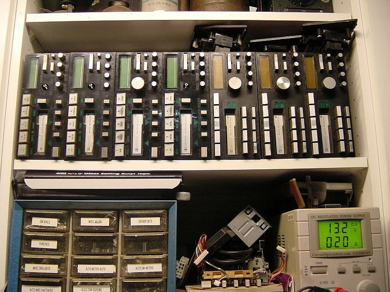

-
Hi guys, so when i turn off my stereo it does not come back on and all the lights for the stereo turn off too , the stereo only works if i disconnect the battery and reconnect it . Plus the big problem is it only plays out of half the speakers and the only way to get her to play out of all the speakers is too turn the volume knob very slowly and find a position that the music plays out of all the speakers . Has anybody had the same problem ? If so i need some help i really want to keep the stock unit . -
The older OEM units fail with age and your best bet for keeping OEM is finding someone who still repairs car stereos.
and pay them whatever they ask. They often suffer from failing capacitors that can cause all sorts of issues.
I can tell you that the unequal volume issue is more than likely the contacts in the potentiometer
and to use some contact cleaner in it to see if that helps, but that requires disassembly of the stereo.
When Z31's were more plentiful in the U-pull-it yards and prices were cheaper, i'd pull the OEM stereo and take it home.

None of them are 100% functional.
Do a google search for stereo repair in your area and see if anyone local services vintage equipment.
84 AE/Shiro #683/Shiro #820/84 Turbo -
Thanks for the reply i will remove the stereo and clean the contacts in the potentiometer -
I've got one fully functional OEM stereo in my 84 which is quite rare. The one in my 85 only works on FM. I checked both ends of the antenna and it's plugged in. Double checked to make sure it wasn't loose.
Decided to pull the sucker a few days ago and ordered a Metra faceplate. Now I'm searching for a reasonably priced quality mp3 player with the best fit. Anyone know of one? I heard Blaupunkt was good.

Copyright © 2006–. All rights reserved. Privacy Policy